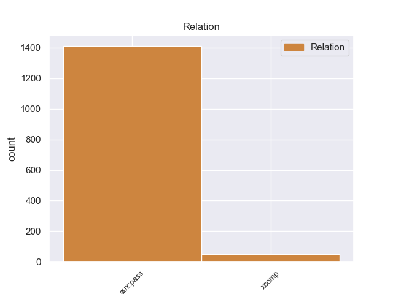
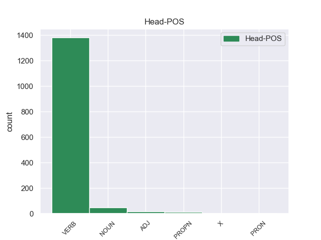
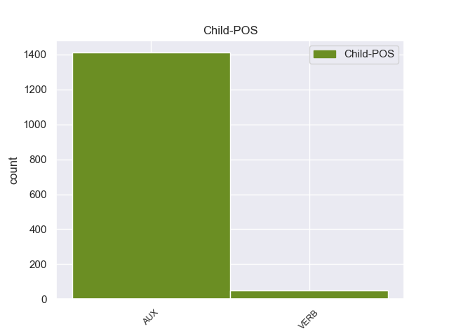

Distribution of features within this leaf



non-conforming Examples:
1 Fue ser AUX _ Mood=Ind|Number=Sing|Person=3|Tense=Past|VerbForm=Fin 2 aux:pass _ _
2 llevado llevar VERB _ Gender=Masc|Number=Sing|Tense=Past|VerbForm=Part 0 _ _ _
3 hasta _ _ _ _ 0 _ _ _
4 el _ _ _ _ 0 _ _ _
5 hospital _ _ _ _ 0 _ _ _
6 de _ _ _ _ 0 _ _ _
7 Verona _ _ _ _ 0 _ _ _
8 en _ _ _ _ 0 _ _ _
9 helicóptero _ _ _ _ 0 _ _ _
10 donde _ _ _ _ 0 _ _ _
11 falleció _ _ _ _ 0 _ _ _
12 . _ _ _ _ 0 _ _ _
1 En _ _ _ _ 0 _ _ _
2 2008 _ _ _ _ 0 _ _ _
3 , _ _ _ _ 0 _ _ _
4 un _ _ _ _ 0 _ _ _
5 acuerdo _ _ _ _ 0 _ _ _
6 fue ser AUX _ Mood=Ind|Number=Sing|Person=3|Tense=Past|VerbForm=Fin 7 aux:pass _ _
7 anunciado anunciar VERB _ Gender=Masc|Number=Sing|Tense=Past|VerbForm=Part 0 _ _ _
8 , _ _ _ _ 0 _ _ _
9 posicionando _ _ _ _ 0 _ _ _
10 a _ _ _ _ 0 _ _ _
11 Ilumination _ _ _ _ 0 _ _ _
12 Entertainment _ _ _ _ 0 _ _ _
13 como _ _ _ _ 0 _ _ _
14 el _ _ _ _ 0 _ _ _
15 brazo _ _ _ _ 0 _ _ _
16 de _ _ _ _ 0 _ _ _
17 entretenimiento _ _ _ _ 0 _ _ _
18 familiar _ _ _ _ 0 _ _ _
19 de _ _ _ _ 0 _ _ _
20 NBC _ _ _ _ 0 _ _ _
21 , _ _ _ _ 0 _ _ _
22 que _ _ _ _ 0 _ _ _
23 produciría _ _ _ _ 0 _ _ _
24 de _ _ _ _ 0 _ _ _
25 una _ _ _ _ 0 _ _ _
26 a _ _ _ _ 0 _ _ _
27 dos _ _ _ _ 0 _ _ _
28 películas _ _ _ _ 0 _ _ _
29 a _ _ _ _ 0 _ _ _
30 el _ _ _ _ 0 _ _ _
31 año _ _ _ _ 0 _ _ _
32 a _ _ _ _ 0 _ _ _
33 partir _ _ _ _ 0 _ _ _
34 de _ _ _ _ 0 _ _ _
35 2010 _ _ _ _ 0 _ _ _
36 . _ _ _ _ 0 _ _ _
1 El _ _ _ _ 0 _ _ _
2 héroe _ _ _ _ 0 _ _ _
3 prusiano _ _ _ _ 0 _ _ _
4 Herkus _ _ _ _ 0 _ _ _
5 Monte _ _ _ _ 0 _ _ _
6 fue ser AUX _ Mood=Ind|Number=Sing|Person=3|Tense=Past|VerbForm=Fin 7 aux:pass _ _
7 aupado aupar VERB _ Gender=Masc|Number=Sing|Tense=Past|VerbForm=Part 0 _ _ _
8 por _ _ _ _ 0 _ _ _
9 los _ _ _ _ 0 _ _ _
10 lituanos _ _ _ _ 0 _ _ _
11 durante _ _ _ _ 0 _ _ _
12 el _ _ _ _ 0 _ _ _
13 régimen _ _ _ _ 0 _ _ _
14 comunista _ _ _ _ 0 _ _ _
15 soviético _ _ _ _ 0 _ _ _
16 como _ _ _ _ 0 _ _ _
17 un _ _ _ _ 0 _ _ _
18 símbolo _ _ _ _ 0 _ _ _
19 de _ _ _ _ 0 _ _ _
20 resistencia _ _ _ _ 0 _ _ _
21 y _ _ _ _ 0 _ _ _
22 libertad _ _ _ _ 0 _ _ _
23 . _ _ _ _ 0 _ _ _
1 La _ _ _ _ 0 _ _ _
2 duración _ _ _ _ 0 _ _ _
3 de _ _ _ _ 0 _ _ _
4 el _ _ _ _ 0 _ _ _
5 efecto _ _ _ _ 0 _ _ _
6 es _ _ _ _ 0 _ _ _
7 de _ _ _ _ 0 _ _ _
8 aproximadamente _ _ _ _ 0 _ _ _
9 7 _ _ _ _ 0 _ _ _
10 horas _ _ _ _ 0 _ _ _
11 cuando _ _ _ _ 0 _ _ _
12 ha _ _ _ _ 0 _ _ _
13 sido ser AUX _ Gender=Masc|Number=Sing|Tense=Past|VerbForm=Part 14 aux:pass _ _
14 administrado administrar VERB _ Gender=Masc|Number=Sing|Tense=Past|VerbForm=Part 0 _ _ _
15 por _ _ _ _ 0 _ _ _
16 la _ _ _ _ 0 _ _ _
17 vía _ _ _ _ 0 _ _ _
18 parenteral _ _ _ _ 0 _ _ _
19 y _ _ _ _ 0 _ _ _
20 hasta _ _ _ _ 0 _ _ _
21 12 _ _ _ _ 0 _ _ _
22 horas _ _ _ _ 0 _ _ _
23 si _ _ _ _ 0 _ _ _
24 se _ _ _ _ 0 _ _ _
25 administró _ _ _ _ 0 _ _ _
26 por _ _ _ _ 0 _ _ _
27 la _ _ _ _ 0 _ _ _
28 vía _ _ _ _ 0 _ _ _
29 oral _ _ _ _ 0 _ _ _
30 . _ _ _ _ 0 _ _ _
1 Al _ _ _ _ 0 _ _ _
2 final _ _ _ _ 0 _ _ _
3 , _ _ _ _ 0 _ _ _
4 Calvin _ _ _ _ 0 _ _ _
5 y _ _ _ _ 0 _ _ _
6 Rusty _ _ _ _ 0 _ _ _
7 , _ _ _ _ 0 _ _ _
8 así _ _ _ _ 0 _ _ _
9 como _ _ _ _ 0 _ _ _
10 los _ _ _ _ 0 _ _ _
11 otros _ _ _ _ 0 _ _ _
12 novatos _ _ _ _ 0 _ _ _
13 , _ _ _ _ 0 _ _ _
14 son ser AUX _ Mood=Ind|Number=Plur|Person=3|Tense=Pres|VerbForm=Fin 16 aux:pass _ _
15 nombrados _ _ _ _ 0 _ _ _
16 hermanos hermano NOUN _ Gender=Masc|Number=Plur 0 _ _ _
17 en _ _ _ _ 0 _ _ _
18 sus _ _ _ _ 0 _ _ _
19 respectivas _ _ _ _ 0 _ _ _
20 fraternidades _ _ _ _ 0 _ _ _
21 , _ _ _ _ 0 _ _ _
22 mientras _ _ _ _ 0 _ _ _
23 que _ _ _ _ 0 _ _ _
24 Frannie _ _ _ _ 0 _ _ _
25 se _ _ _ _ 0 _ _ _
26 marcha _ _ _ _ 0 _ _ _
27 y _ _ _ _ 0 _ _ _
28 crea _ _ _ _ 0 _ _ _
29 una _ _ _ _ 0 _ _ _
30 nueva _ _ _ _ 0 _ _ _
31 fraternidad _ _ _ _ 0 _ _ _
32 , _ _ _ _ 0 _ _ _
33 llevándo _ _ _ _ 0 _ _ _
34 se _ _ _ _ 0 _ _ _
35 a _ _ _ _ 0 _ _ _
36 muchas _ _ _ _ 0 _ _ _
37 de _ _ _ _ 0 _ _ _
38 las _ _ _ _ 0 _ _ _
39 hermanas _ _ _ _ 0 _ _ _
40 de _ _ _ _ 0 _ _ _
41 ΖΒΖ _ _ _ _ 0 _ _ _
42 con _ _ _ _ 0 _ _ _
43 ella _ _ _ _ 0 _ _ _
44 . _ _ _ _ 0 _ _ _